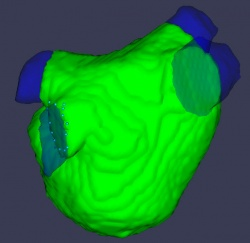

Surface parameterization software
From Rashed Karim Wiki
Surface contour approximation
Authalic parameterization
In CGAL, paramterization using Authalic parameterimzation:
- Code for generating parameterization here.
- Code for visualizing parameterization: Version 1.0, version 2.0
- Instructions here
- Some notes here
B-Spline parameterization
Note: Obsolete
Select vein-chamber junction points
Steps:
  View of the veins cut and the atrial chamber. This is basically two shells loaded with the left atrial complete shell shown as a transparent model
View of the veins cut and the atrial chamber. This is basically two shells loaded with the left atrial complete shell shown as a transparent model
- Open rkapp1
- Open VTK shell - open the atrial chamber that is being flattened - enter point data or cell data - enter any threshold (only relevant for encirclement measurements)
- Open 2nd VTK reference shell - open the LA segmented shell (this includes the atrial chamber + the veins)
- The 2nd VTK shell will display as transparent.
- At this point press on TempFunc button to remove the 2nd shell, so that points can be picked on the 1st shell.
- Using 'h' on keyboard, select points on the 1st shell (i.e. atrial chamber shell). Remember we are selecting points on the border of the vein-chamber junction These are the points that will be recorded to file 'pointsPicke_n.txt' where n is the number of times you record starting from 0, 1, 2 and so on.
- Once points are selected for a specific vein-chamber, press the TempFunc2 button to record the points.
- Code which handles most of the operations described above can be found in rkapp1.cxx here:
void writePickedPointsToFile_cb(Fl_Widget*, void* v)
{
double xyz[3];
const char* newfile;
ofstream outputToFile;
stringstream ss;
ss << "";
ss << "pointsPicked_" << pointsPickedFileNum << ".txt";
cout << "Writing to file " << ss.str().c_str() << endl;
outputToFile.open(ss.str().c_str());
// now write the points that were picked since the last time writePickedPointsToFile_cb was called
outputToFile << "Picked points x, y and z co-ordinates in world CS" << endl;
for (int i=indexOfLastPointWrittenToFile; i<enc->_ptSeq; i++)
{
enc->_pointList->GetPoint(i, xyz);
outputToFile << setprecision(3) << xyz[0] << " " << xyz[1] << " " << xyz[2] << endl;
}
outputToFile.close();
indexOfLastPointWrittenToFile = pointsPickedCounter;
pointsPickedFileNum++;
}

{kind=link}